南天洞の隣には
三寶洞というお寺がある。
つまり霊岩仙、南天洞、三寶洞の3つのお寺は隣同士なのだ。
その洞窟寺院三兄弟の中でも一番有名な三寶洞へ。
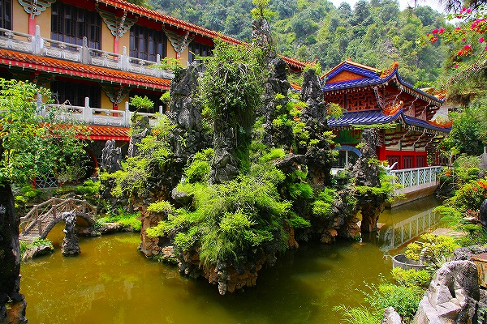
境内に入るといきなり良い感じの池がある。
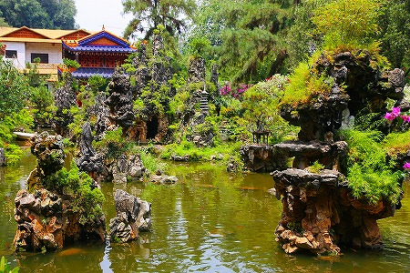
ねっとりとした水を蓄える池に人工的な石を配してある。
中には人工のミニチュア洞窟なども造ってあり、見事な縮景を形成している。
このような人工の縮景は中華世界ではよく見かける。
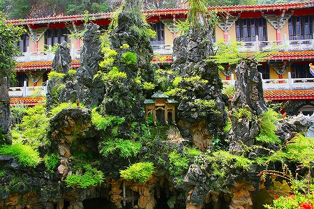
例えば、香港で見た中華グロッタの
青松仙観などなど。
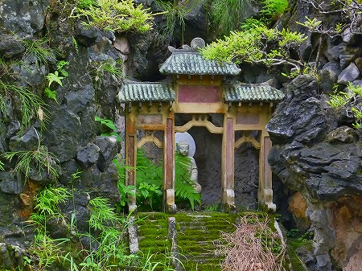
いわば盆景の巨大版、とでもいうモノ。
日本の盆景と違うのは門や塔のような建築物や人形といった人工物を配することで、より
リアルなスケール感と物語性を感じさせる点。
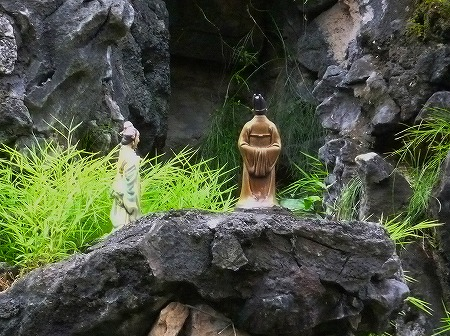
ただし、三重塔の隣に同じ大きさの仙人が立ってたりするので、それはそれで可笑しくていいのだが,
スケール感はめちゃくちゃだったりする。
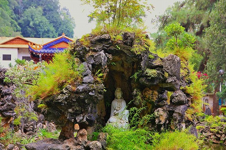
この辺、宮田珠己氏の怪著
ふしぎ盆栽ホンノンボ (講談社文庫) に詳しいので興味ある方は御一読あれ。
池の上に浮かんでいるような中華テイスト満点の建物が一際印象的だった。
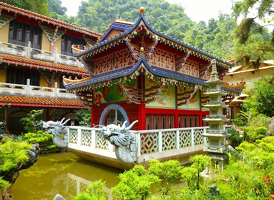
なんだか水上をぐんぐん進みそうな感じで堪らんですなー。
池の脇にも中華風な建物。こちらは宿坊や食堂、寺務所的な建物っぽい。
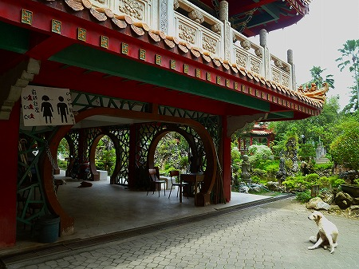
参拝前にとりあえずトイレにＧＯ ＧＯ ＧＯ！
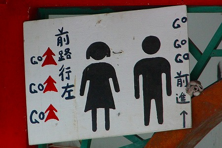
…というわけでいよいよ本丸の洞窟である。
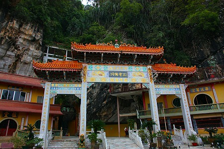
崖に直接ＲＣ造の建物が張り付いているスタイルだが、先ほどの南天洞と違って洞窟自体を覆っているわけではない。
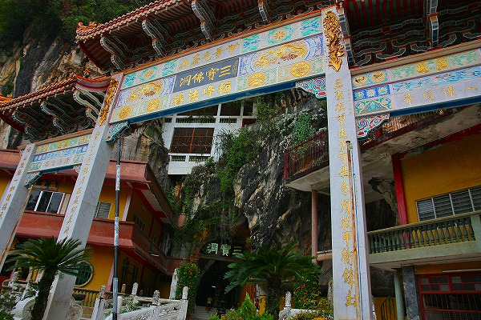
洞窟自体は間口が狭く、奥行きが深い形状なのだ。
↓ここが入り口。
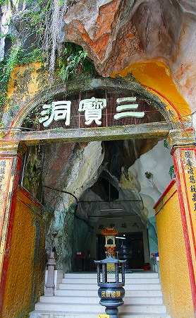
入り口の脇には狛犬がいるが線香を食わされてます…。鼻の下も真っ黒。
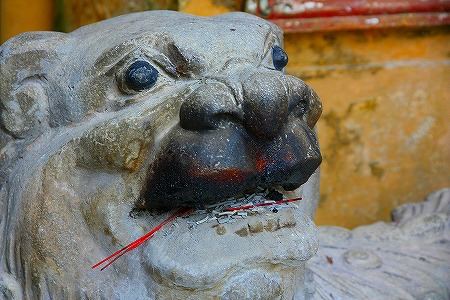
中に入るといきなり布袋サマがお出迎え。
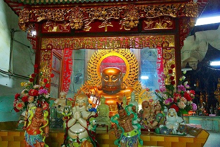
その裏にはお釈迦様と…十六羅漢なのかな？
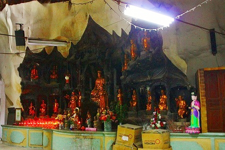
先述の通り間口が狭く奥行きの深い洞窟なのだが、加えて高さがある。
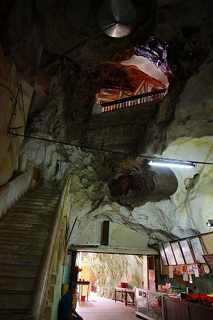
…というわけで入ってきたフロアから階段を上ってさらに高い場所へ行くことが出来る。
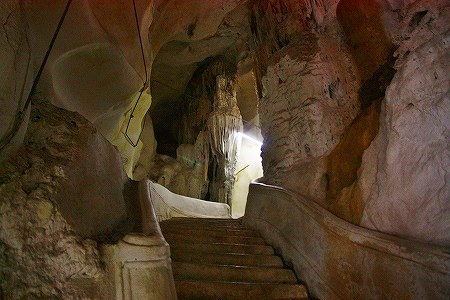
見下ろせば布袋サマがどんどん小さくなっていく。
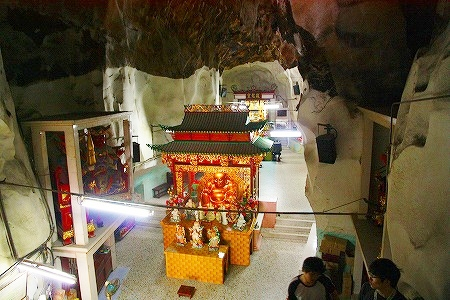
階段の先には外光が差し込んでいる。
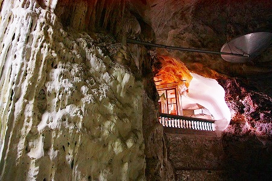
階段の両脇の壁面の
マチエールの気持ち悪さがハンパない。
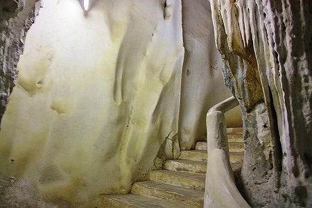
まるで生き物の腹の中のごとき
ぬぅめぇぇぇ〜っとした空間
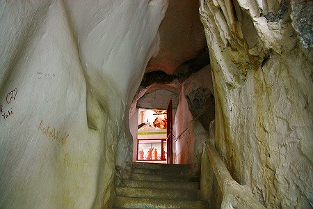
自然と人工がせめぎあい、ぶつかりあい、とけあっている。
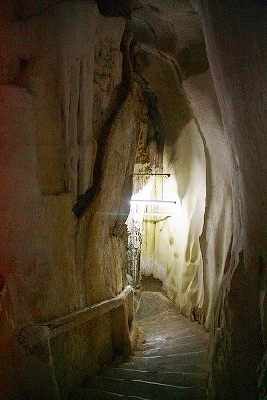
登りついた先には窓があり、そこからは先ほど入ってきた門が見える。
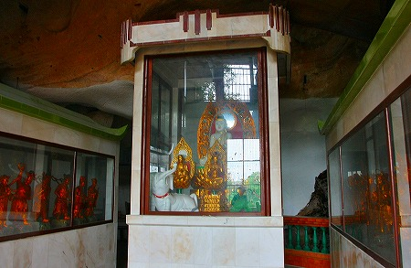
中央にはビルマスタイルの玉仏などなど。
広大な空間に神像が点在しており、どこか
ヨーロッパの大聖堂を髣髴とさせなくもなくなくない。
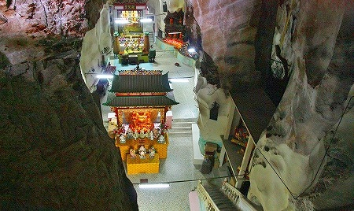
奇妙で巨大な岩と岩の間に
「チョットお邪魔しますよ」的に階段が作られている感じが凄くイイ。
私はこういった地形に合わせた
他律的な建造物が大好きだ。
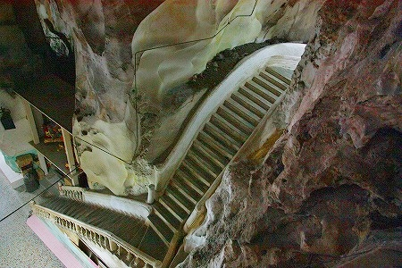
課せられた建築的条件が厳しければ厳しいほど、見たことのないユニークな空間が出来上がってくる点に惹かれるのだろう。
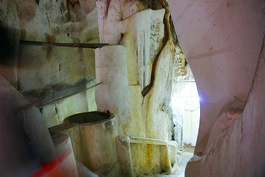
極端な傾斜地に建つ建造物、建築規制と商業的価値が臨界点に達した商業ビル、コンクリ大仏の胎内空間…
これらの建造物同様、鍾乳洞というつかみどころのない空間の中に階段や床を架設することで出現する奇妙な空間。
それは様々な条件でがんじがらめになった末に生み出されるSM的な空間ともいえよう。
そこに喩えようもない快楽を見出す私はド変態、ということで結構です。ハイ。
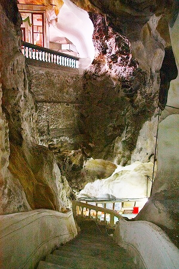
エロティックな鍾乳洞とマッシブな人工物のせめぎあいにしばし呆然…。
お寺の隣が何やらにぎやかなのでチョット寄り道してみる。
「化城」という門を潜ると大勢の人がいた。
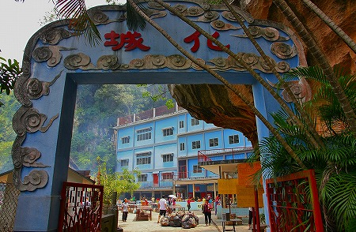
納骨堂のようだ。
建物の前にはたくさんの供え物が並んでいる。
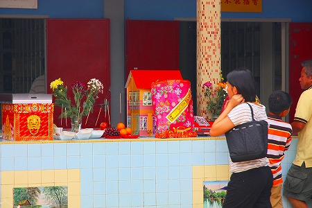
そっか。人が多いと思ったら
清明祭か。
清明祭とは祖先の墓参りの日で、日本では沖縄以外で見られることは少ないが、華人社会では広く浸透している習俗である。
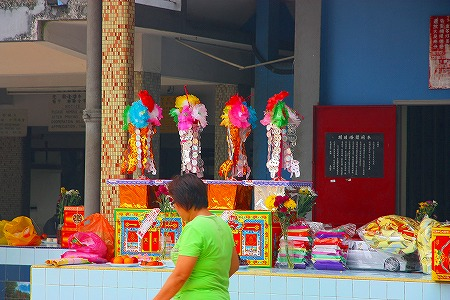
紙でできた家や車、宝箱、あの世で使う紙幣などもたくさん奉納されていた。
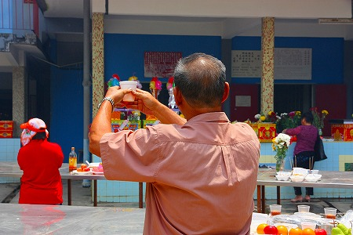
中国から遠く離れた地だが、イポーには広東や客家の人が多いだけに華人の習俗が色濃く残っているようだ。
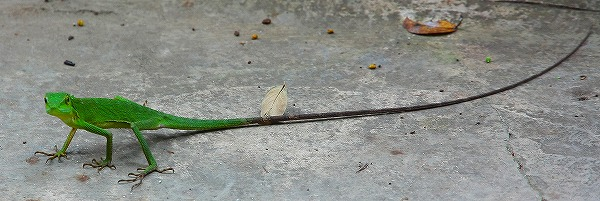
足元を見たら目が覚めるような鮮やかなトカゲがこっちを覗き込んでいたよ。
次は凄いぞ！
馬来西亜珍寺大行進
珍寺大道場 HOME